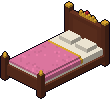
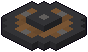
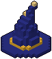
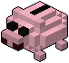
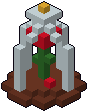
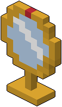
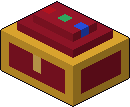
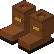
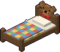

Letto della principessa
+1 energia massima.
- Prezzo
- 10 promesse
- Zona
- il letto
I ricordi si comprano al negozio con le promesse e da allora restano per sempre nello slot: compaiono lungo i muri della stanza della principessa e valgono a ogni discesa, tutti insieme. Ogni ricordo ha la sua zona della stanza, e in una zona ne vale uno alla volta: il Letto della principessa e il Lettino dell'orsetto, per esempio, stanno tutti e due nella zona del letto. Se compri un ricordo per una zona già occupata prende il posto del vecchio, che resta tuo: E sulla zona per rimetterlo, anche all'inizio di una discesa. I ricordi che danno un oggetto (lo scudo, le chiavi) lo ridanno a ogni discesa.

+1 energia massima.
+20 mana massimo.

Parti con lo scudo in mano.

Due balzi di fila.

A fine discesa tieni metà delle promesse.

Una volta, morendo, ti rialzi.

A ogni piano vedi subito la scala e la porta nera.

Parti con due chiavi dorate.

Balzo più lungo.

Scegli la reliquia di partenza fra cinque invece che fra tre.